『都市経済学』（金本良嗣著，東洋経済新報社，1997年11月刊）のページ
正誤表
注意：2000年に出た第２刷では以下の誤りは訂正されているはずです．
105ページ 15行：
誤：減価償却の三つの費用
正：減価償却，維持費用の四つの費用
51ページ (3.5)式： Σの上が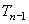ではなく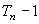です。
誤：
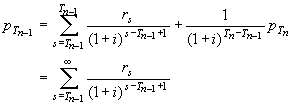
正：
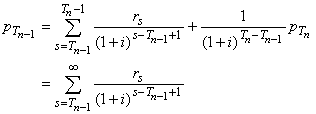
85ページ 11行：
誤： (4.15) 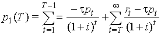
正： (4.15) 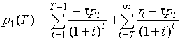
86ページ (4.18)式： Σの下が と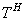です。
と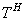です。
誤：
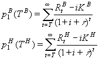
正：
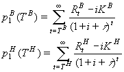
103ページ (5.1)式が２つありますが、２つ目は(5.2)式です。
105ページ 4行〜5行：
誤：．．．したがって，借家経営による純収益は
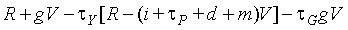
正：．．．したがって，借家経営による純収益は
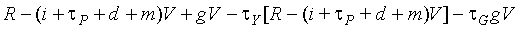
220ページ 図8-5：
誤： 図の中の小文字の p
正： 図の中の p
はすべて大文字の P
244ページ (9.13)式
誤： (9.13) 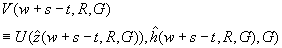
正： (9.13) 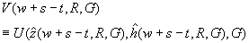
284ページ 図 10-6 のＬＲＭＣ＝ＬＲＡＣの太線はP**＝AC**の点まで延びていなければなりません。
301ページ 図 10-11 の斜線部は以下のようになっている必要があります。
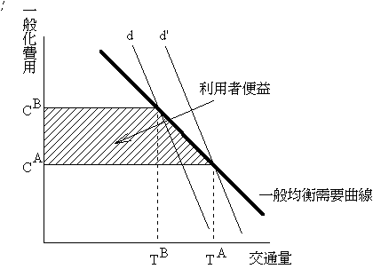
351ページ 下から5行目：
誤： 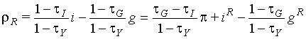
正： 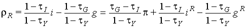
358ページ 問2の解答
問2の解答は省略です。ここにある解答は次ページの問4の解答です。次ページの問4の解答より少しだけ親切に書いてありますので、問2の解答を問4の解答と差し替えて下さい。
363ページ 問2の解答
(c)
誤： 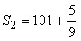，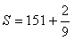
正： 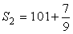，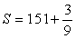
(d)
誤： 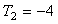
正： 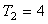
削除：ケース２の税収が．．．の形にしておけばよい．

 私のホームページに戻る（Back
to my home page)
私のホームページに戻る（Back
to my home page)